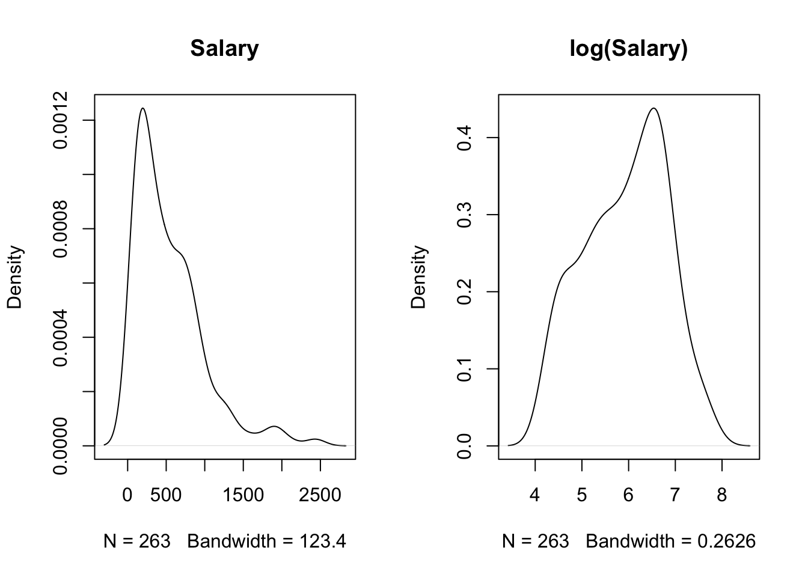
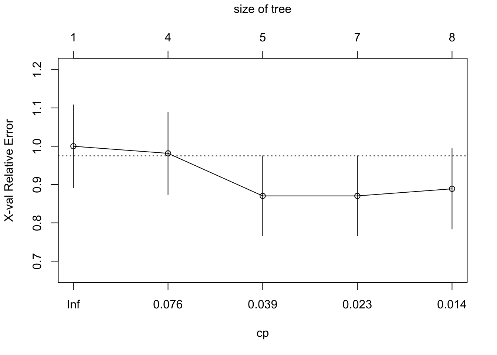

library(ISLR2)
data(Hitters)
par(mfrow=c(1,2))
plot(density(na.omit(Hitters$Salary)), main="Salary")
plot(density(na.omit(log(Hitters$Salary))), main="log(Salary)")

RThere are several packages in R to compute decision trees.
The tree package is based on the original implementation in the S language (the precursor to R). The tree::tree() function fits classification and regression trees and provides modest control over the tree building process. Cost-complexity pruning the tree is performed with tree::prune.tree, using deviance as cost criterion for regression trees and either deviance or misclassification rate for classification trees. (Note that the deviance for regression trees is just squared error complexity). Pruning can be combined with cross-validation using tree::cv.tree. The tree package does not support surrogate splits to handle missing values.
The party package uses recursive partitioning as the building block for varied statistical models, including trees (party::ctree is the main function in the package). It also supports random forests through party::cforest and surrogate splits for missing values.
A comprehensive and widely used package is rpart, which fits regression and classification trees following the CART philosophy of Breiman et al. (1984). rpart is the CART package in R. Because CART was the trademarked name of a commercial software implementation of Breiman’s ideas by Salford Systems and tree had already been taken, the authors settled on rpart as the package name. This vignette gives an introduction to the capabilities of the rpart package.
Ironically, rpart is probably used more frequently today than the CART software by Salford Systems (acquired by Minitab in 2017).
Minitab/Salford System claims that theirs is the only true implementation of CART, that they have worked with the inventors (Breiman and colleagues), that only they have access to the original source code, and that the famous papers described only 20% of the code.
rpart provides detailed control over the tree building process and supports surrogate splits for missing values. An interesting aspect of rpart is to evaluate subtrees for different values of the cost complexity parameter during the training phase and to apply cross-validation. You can thus select the desired value of the complexity parameter immediately after training and pass the value on to the rpart::prune function to get the optimal tree.
Getting to know rpart is also useful because it is used by other R packages that depend on trees. For example, the ada package for adaptive boosting models uses rpart to compute boosted trees. To affect the construction of the trees during boosting you need to know how to control tree construction in rpart.
Most tree packages have their own functions to plot trees and annotate them with labels for splits and nodes. rpart provides plot.rpart and text.rpart, tree provides plot.tree and text.tree. The rpart.plot package extends the functions provided by the rpart package. We use the rpart and rpart.plot packages in what follows.
For this application we use the Hitters data on performance and salaries of baseball players in the 1986/1987 seasons, the data are provided in the ISLR2 library. Because the salaries are highly skewed a log transformation is applied prior to constructing the tree (Figure 17.1). We will examine later the effect of the log-transformation on the tree.
library(ISLR2)
data(Hitters)
par(mfrow=c(1,2))
plot(density(na.omit(Hitters$Salary)), main="Salary")
plot(density(na.omit(log(Hitters$Salary))), main="log(Salary)")The following statements load the rpart library and request a decision tree according to the model formula. Note that not all variables specified in the model are necessarily used in constructing the tree. method="anova" requests a regression tree, the complexity criterion is the residual sum of squares. Since the target variable is continuous, rpart defaults to a regression tree in this case and the method= specification is not necessary. However, because rpart has several tree-building methods to choose from, it is not a bad idea to state explicitly what is intended.
Note that a random number seed is set prior to the call to rpart since the function performs 10-fold cross-validation by default. While the tree returned by rpart is not affected by the seed, the evaluations of the complexity (penalty) parameter during cross-validation depend on the random number stream.
library(rpart)
set.seed(87654)
t1 <- rpart(log(Salary) ~ Years + Hits + RBI + Walks + Runs + HmRun +
PutOuts + AtBat + Errors,
data=Hitters,
method="anova")
summary(t1, cp=0.2)Call:
rpart(formula = log(Salary) ~ Years + Hits + RBI + Walks + Runs +
HmRun + PutOuts + AtBat + Errors, data = Hitters, method = "anova")
n=263 (59 observations deleted due to missingness)
CP nsplit rel error xerror xstd
1 0.44457445 0 1.0000000 1.0024572 0.06529349
2 0.11454550 1 0.5554255 0.5936326 0.06177974
3 0.04446021 2 0.4408800 0.5190135 0.06426742
4 0.01831268 3 0.3964198 0.4639453 0.06373984
5 0.01806689 4 0.3781072 0.4734726 0.06728376
6 0.01678632 6 0.3419734 0.4776621 0.06718932
7 0.01617738 7 0.3251871 0.4679886 0.06739159
8 0.01000000 8 0.3090097 0.4570960 0.06731152
Variable importance
Years Hits Runs AtBat RBI Walks HmRun PutOuts
38 13 12 10 10 10 5 4
Node number 1: 263 observations, complexity param=0.4445745
mean=5.927222, MSE=0.7876568
left son=2 (90 obs) right son=3 (173 obs)
Primary splits:
Years < 4.5 to the left, improve=0.4445745, (0 missing)
Hits < 117.5 to the left, improve=0.2229369, (0 missing)
RBI < 43.5 to the left, improve=0.2161883, (0 missing)
AtBat < 472.5 to the left, improve=0.1865249, (0 missing)
Walks < 34.5 to the left, improve=0.1678353, (0 missing)
Surrogate splits:
HmRun < 1.5 to the left, agree=0.696, adj=0.111, (0 split)
RBI < 24.5 to the left, agree=0.688, adj=0.089, (0 split)
Walks < 11.5 to the left, agree=0.681, adj=0.067, (0 split)
Runs < 13.5 to the left, agree=0.673, adj=0.044, (0 split)
Hits < 29.5 to the left, agree=0.669, adj=0.033, (0 split)
Node number 2: 90 observations
mean=5.10679, MSE=0.4705907
Node number 3: 173 observations
mean=6.354036, MSE=0.4202619 The summary function produces a lengthy listing of the tree. The cp= option is used here to specify a cutoff value for displaying nodes that fall below the value of the complexity parameter, simply to limit the amount of output. The cp= option on the summary call prunes the output, it does not prune the tree.
The first table lists the result of 10-fold cross-validation of the cost-complexity parameter, more on this below. The variable importance listing ranks variables by a combination measure that accounts for the quality of split where the variable was the primary split variable, and an adjustment for splits where the variable was a surrogate. The sum of the variable importance measures is 100, but due to rounding it might sum to a slightly different value. A variable that has a relative high variable importance might not get used in the final tree, due to pruning.
The first node at the trunk of the tree contains 263 observation. The best split variable at this level is Years with split value of 4.5. Using this variable and split point leads to the largest improvement in the complexity criterion. rpart also constructs a list of the surrogate variables should the primary split variable be missing. For this node a missing value in Years would be split on HmRun. The numbers in parentheses tell you how many observations actually had missing values and which split variables were used as surrogates. For these data, only the target variable contains missing values.
rpart removes observations with missing values from the analysis if the target is missing or if all inputs are missing. The missing values in this data set occur only in the target variable, which means that surrogates were not used in training the model.
A more concise listing of the tree is obtained with the print method.
print(t1)n=263 (59 observations deleted due to missingness)
node), split, n, deviance, yval
* denotes terminal node
1) root 263 207.153700 5.927222
2) Years< 4.5 90 42.353170 5.106790
4) Years< 3.5 62 23.008670 4.891812
8) Hits< 114 43 17.145680 4.727386 *
9) Hits>=114 19 2.069451 5.263932 *
5) Years>=3.5 28 10.134390 5.582812
10) Runs< 74.5 21 4.229230 5.379350 *
11) Runs>=74.5 7 2.427815 6.193200 *
3) Years>=4.5 173 72.705310 6.354036
6) Hits< 117.5 90 28.093710 5.998380
12) Walks< 21.5 26 5.001884 5.687706 *
13) Walks>=21.5 64 19.562870 6.124591
26) Years< 6.5 18 6.411418 5.727128 *
27) Years>=6.5 46 9.195161 6.280120 *
7) Hits>=117.5 83 20.883070 6.739687
14) Walks< 60.5 50 10.225000 6.576444 *
15) Walks>=60.5 33 7.306869 6.987024 *There are a total of 15 nodes in the tree and 9 terminal nodes (leaves) as indicated by asterisks. For each node, the listing shows the split variable and split point, the number of observations, the residual sum of squares, and the representative value for the node. For example, at the root node (trunk) of the tree there are 263 observations, the sum of squares \(\sum (y-\overline{y})^2 = 207.153\) and the average log salary is 5.9272. Ninety observations are split off to the left at the first split on Years with split value of 4.5. The sum of squares of those ninety observations is 42.353 and their average is 5.1067.
The easiest way to consume the results of constructing a tree is by visualizing the tree. The rpart.plot function in the rpart.plot package creates good-looking trees and has many options to affect the rendering. Figure 17.2 displays the regression tree for the Hitters data built so far.
library(rpart.plot)
rpart.plot(t1,roundint=FALSE)rpart for Hitters data.
The boxes annotating the nodes display the representative (predicted) value for the node and the percent of observations that fall into the node. The intensity of the node color is proportional to the value predicted at the node.
If we were to choose a “stump”—that is, a tree with a single split, we would predict a log salary of 6.4 for players who have been in the league for more than 4.5 years and a salary for 5.1 for the players with less tenure. For a player with 7 years experience, 100 hits and 30 walks in 1986 we would predict a log salary of 6.3.
Note that not all variables in the model are used in constructing the tree. Variables that do not improve a tree at any split in a meaningful way do not show up. For example, the number of RBIs or errors in 1986 are not used as primary split variables. This does not mean that these variables are unrelated to the target, they can enter the model indirectly through correlation with other variables. They might also be used as surrogate split variables, which the figure does not convey.
Also note that variables can be reused. A variable that serves as the primary split variable can later be used again as a split variable. For example, Years is the first split variable and is used again on both sides of the tree. The number of Walks in 1986 separates observations differently for longer-tenured players that have less than 118 Hits and those who have more.
What would the tree look like if we had not transformed the target variable by taking logarithms?
t2 <- rpart(Salary ~ Years + Hits + RBI + Walks + Runs + HmRun +
PutOuts + AtBat + Errors,
data=Hitters,
method="anova")
rpart.plot(t2,roundint=FALSE)rpart for Hitters data.
Clearly, Figure 17.3 is not the same tree as shown in Figure 17.2. Although the log transformation is monotonic for the positive salary values, it affects the distribution of the target variable and its relationship to the inputs.
However, if we apply a monotone transformation to inputs, the constructed tree does not change. The following code fits the initial tree but uses log(years) instead of years. Only the values for the split variable change, but not the tree (Figure 17.4). Compare this to Figure 17.2.
t3 <- rpart(log(Salary) ~ log(Years) + Hits + RBI + Walks + Runs + HmRun +
PutOuts + AtBat + Errors,
data=Hitters,
method="anova")
rpart.plot(t3,roundint=FALSE)Changing in the model from years to log(years) does not impact the splits or split values for any of the other inputs. This is fundamentally different from a linear regression model where transforming one input variable affects the coefficients of other inputs unless they are completely uncorrelated. Compare the following:
round(
lm(log(Salary) ~ Years + Hits + RBI + Walks + Runs + HmRun +
PutOuts + AtBat + Errors,
data=Hitters)$coefficients,4)(Intercept) Years Hits RBI Walks Runs
4.3797 0.0933 0.0128 0.0004 0.0066 0.0014
HmRun PutOuts AtBat Errors
0.0033 0.0003 -0.0025 -0.0029 round(
lm(log(Salary) ~ log(Years) + Hits + RBI + Walks + Runs + HmRun +
PutOuts + AtBat + Errors,
data=Hitters)$coefficients,4)(Intercept) log(Years) Hits RBI Walks Runs
3.9394 0.6952 0.0108 -0.0002 0.0059 0.0024
HmRun PutOuts AtBat Errors
0.0057 0.0004 -0.0023 0.0000 A very helpful extension of rpart in rpart.plot is the rpart.rules function. It expresses the decisions captured in an rpart model as a set of text rules. The variables are listed in the order of frequency in the rules. A variable that appears in more rules is listed first. Adding the cover=TRUE option also displays the percentage of cases covered by each rule. For the initial tree constructed above, this yields:
rpart.rules(t1, roundint=FALSE) log(Salary)
4.7 when Years < 3.5 & Hits < 114
5.3 when Years < 3.5 & Hits >= 114
5.4 when Years is 3.5 to 4.5 & Runs < 75
5.7 when Years >= 4.5 & Hits < 118 & Walks < 22
5.7 when Years is 4.5 to 6.5 & Hits < 118 & Walks >= 22
6.2 when Years is 3.5 to 4.5 & Runs >= 75
6.3 when Years >= 6.5 & Hits < 118 & Walks >= 22
6.6 when Years >= 4.5 & Hits >= 118 & Walks < 61
7.0 when Years >= 4.5 & Hits >= 118 & Walks >= 61 The information displayed in the rules can be affected through options, for example,
rpart.rules(t1, cover=TRUE, style="tallw", roundint=FALSE)log(Salary) is 4.7 with cover 16% when
Years < 3.5
Hits < 114
log(Salary) is 5.3 with cover 7% when
Years < 3.5
Hits >= 114
log(Salary) is 5.4 with cover 8% when
Years is 3.5 to 4.5
Runs < 75
log(Salary) is 5.7 with cover 10% when
Years >= 4.5
Hits < 118
Walks < 22
log(Salary) is 5.7 with cover 7% when
Years is 4.5 to 6.5
Hits < 118
Walks >= 22
log(Salary) is 6.2 with cover 3% when
Years is 3.5 to 4.5
Runs >= 75
log(Salary) is 6.3 with cover 17% when
Years >= 6.5
Hits < 118
Walks >= 22
log(Salary) is 6.6 with cover 19% when
Years >= 4.5
Hits >= 118
Walks < 61
log(Salary) is 7.0 with cover 13% when
Years >= 4.5
Hits >= 118
Walks >= 61As mentioned earlier, rpart performs cross-validation for cost complexity values as part of the tree construction. This is the origin of the CP table that appears at the top of the summary.rpart output. You can print this information by itself with the printcp function.
cp <- printcp(t1)
Regression tree:
rpart(formula = log(Salary) ~ Years + Hits + RBI + Walks + Runs +
HmRun + PutOuts + AtBat + Errors, data = Hitters, method = "anova")
Variables actually used in tree construction:
[1] Hits Runs Walks Years
Root node error: 207.15/263 = 0.78766
n=263 (59 observations deleted due to missingness)
CP nsplit rel error xerror xstd
1 0.444574 0 1.00000 1.00246 0.065293
2 0.114545 1 0.55543 0.59363 0.061780
3 0.044460 2 0.44088 0.51901 0.064267
4 0.018313 3 0.39642 0.46395 0.063740
5 0.018067 4 0.37811 0.47347 0.067284
6 0.016786 6 0.34197 0.47766 0.067189
7 0.016177 7 0.32519 0.46799 0.067392
8 0.010000 8 0.30901 0.45710 0.067312The complexity table lists trees in order of the complexity criterion, smaller trees are on top (larger CP value), larger trees at the bottom. The number of (internal) nodes in the tree is nsplit plus one. The error columns are reported relative to the error at the first node. xerror is the error from cross-validation and xstd is the standard error. Scanning the xerror column we see that the error is minimized at 3 splits (4 nodes). The standard error is useful to determine the best number of split points by taking in the uncertainty in the error estimate and the fact that there is often a neighborhood of similar values. The 1-SE rule says to consider all values within one standard error of the achieved minimum. Those are essentially equivalent and we choose the simplest model. In Figure 17.5 this is a tree of size 4 (3 splits). The horizontal line is drawn 1 standard error above the smallest cross-validated error.
plotcp(t1, upper="size")To produce the final tree, apply the prune function with the selected value of the complexity parameter (Figure 17.6).
t_final <- prune(t1,cp=cp[cp[,2]==3,1])
rpart.plot(t_final,roundint=FALSE)Many parameters and setting affect the construction of the tree. The split criterion, cost function, minimum number of observations before attempting a split or in terminal nodes, the use of surrogate variables, the maximum depth, cross-validation settings, and so on.
Changing tree control parameters affects primarily the depth of the tree and the computational requirements. For example, rpart computes by default up to 5 surrogate split variables. Unless you have missing values in input variables, surrogate splits will not be used. If you are sure that you also do not have missing values in non-training data, then you can skip the determination of the surrogates. Approximately half of the computing time during tree construction is used to find surrogate splits.
In rpart, parameters that determine the tree construction are passed as a rpart.control structure to the control= parameter. The most important parameters that determine the depth of the tree are
minsplit: The minimum number of observations in a node for which a split is even attempted, default 20. Setting this to a small number will save computation time since nodes that have fewer than minsplit observations will not be split and are likely chopped off during pruning.
minbucket: The minimum number of observations in terminal nodes (leaves). The default is minsplit/3.
cp: Threshold for the complexity parameter. Recall from Section 16.3.2 that the complexity of the tree is measured during pruning as \[
C_\alpha(T) = Q(T) + \alpha|T|
\] where \(Q(T)\) is the cost criterion by which tree \(T\) is evaluated, \(|T|\) is the number of terminal nodes in \(T\), and \(\alpha\) is the penalty parameter. The rpart version of this is \[
C_\alpha(T) = Q(T) + cp|T|\, Q(T_1)
\] where \(Q(T_1)\) is a tree with no splits. A split that does not improve the fit by at least the cp= threshold value will not be attempted. Setting cp=1 results in a tree with no splits. The default is cp=0.01. During cost-complexity pruning rpart evaluates trees for values that are larger than the threshold parameter. Setting cp=0 asks rpart to evaluate very deep trees, subject to the other parameters such as minsplit, minbucket, and maxdepth.
maxdepth: the maximum depth of the final tree, with the root node counting as depth zero. For example, maxdepth=1 results in a single split, also known as a “stump”. (Technically, a stump would have no splits.)
Important parameters that control the memory and computational requirements beyond computing trees at various depths are
maxsurrogate: the number of surrogate splits, default is 5. Set it to 0 to prevent the search for surrogate split variables.
xval: the number of cross-validations, default is 10.
cp: The complexity parameter threshold also affects the computing requirements as splits that do not improve the overall fit by at least that value will not be attempted.
A special application of controlling the construction of decision trees are trees with a single split, also called “stumps”. In most scenarios such trees will underfit the data. However, in adaptive boosting, we fit a large number of trees where subsequent trees are weighing observations according to the level of misclassification, those trees focus on observations poorly classified so far. The individual trees are not deep trees, relying only on the most important variables. The use of stumps is common in adaptive boosting.
The following code fits a stump to the Hitters data. minsplit=2 specifies that a split will not be attempted unless at least two observations are present. This guarantees that at least one split occurs (setting minsplit=0 as recommended in some places does not seem to always work in guaranteeing a single split). Setting the threshold for the complexity parameter to -1 essentially turns off checking whether the split improves the overall fit. maxdepth=1 sets the maximum depth of the tree to two nodes; zero depth refers to the root node. Finally, xval=0 turns off the cross-validation.
stump <- rpart(log(Salary) ~ Years + Hits + RBI + Walks + Runs + HmRun +
PutOuts + AtBat + Errors,
data=Hitters,
control=rpart.control(maxdepth = 1,
cp =-1,
minsplit = 2,
xval = 0),
method="anova")
stumpn=263 (59 observations deleted due to missingness)
node), split, n, deviance, yval
* denotes terminal node
1) root 263 207.15370 5.927222
2) Years< 4.5 90 42.35317 5.106790 *
3) Years>=4.5 173 72.70531 6.354036 *rpart.plot(stump,roundint=FALSE)The result of the stump fit are as expected based on the previous analysis. The number of years in the league is the most important variable and the basis of the first split (Figure 17.7).
Fitting a classification tree in rpart is simple, when the target variable is a factor the software defaults to building a classification tree. Choosing method=class makes that explicit.
For this example we use the stagec data frame that ships with the rpart package. It contains data on 146 patients with stage C prostate cancer from a study on the prognostic value of flow cytometry.
Input variables include
age: age of patient in yearseet: a binary variable indicating early endocrine therapy (1=no, 2=yes)g2: percent of cells in G2 phase as determined by flow cytometrygrade: the grade of the tumor according to the Farrow systemgleason: the Gleason score of the tumor, higher values indicate a more aggressive cancerploidy: a three-level factor that indicates the tumor status according to flow cytometry as diplioid, tetraploid, or aneuploid.The outcome (target) variable for this classification is pgstat, a binary variable that indicates progression of the cancer (pgstat=1). The variable is recoded as a factor for a nicer display on the tree. Similarly, the eet variable is recoded as a factor.
data(stagec)
head(stagec) pgtime pgstat age eet g2 grade gleason ploidy
1 6.1 0 64 2 10.26 2 4 diploid
2 9.4 0 62 1 NA 3 8 aneuploid
3 5.2 1 59 2 9.99 3 7 diploid
4 3.2 1 62 2 3.57 2 4 diploid
5 1.9 1 64 2 22.56 4 8 tetraploid
6 4.8 0 69 1 6.14 3 7 diploidprogstat <- factor(stagec$pgstat, levels = 0:1, labels = c("No", "Prog"))
eetfac <- factor(stagec$eet, levels=1:2, labels=c("No, Yes"))
set.seed(543)
cfit <- rpart(progstat ~ age + eetfac + g2 + grade + gleason + ploidy,
data = stagec,
method = 'class')
print(cfit)n= 146
node), split, n, loss, yval, (yprob)
* denotes terminal node
1) root 146 54 No (0.6301370 0.3698630)
2) grade< 2.5 61 9 No (0.8524590 0.1475410) *
3) grade>=2.5 85 40 Prog (0.4705882 0.5294118)
6) g2< 13.2 40 17 No (0.5750000 0.4250000)
12) ploidy=diploid,tetraploid 31 11 No (0.6451613 0.3548387)
24) g2>=11.845 7 1 No (0.8571429 0.1428571) *
25) g2< 11.845 24 10 No (0.5833333 0.4166667)
50) g2< 11.005 17 5 No (0.7058824 0.2941176) *
51) g2>=11.005 7 2 Prog (0.2857143 0.7142857) *
13) ploidy=aneuploid 9 3 Prog (0.3333333 0.6666667) *
7) g2>=13.2 45 17 Prog (0.3777778 0.6222222)
14) g2>=17.91 22 8 No (0.6363636 0.3636364)
28) age>=62.5 15 4 No (0.7333333 0.2666667) *
29) age< 62.5 7 3 Prog (0.4285714 0.5714286) *
15) g2< 17.91 23 3 Prog (0.1304348 0.8695652) *rpart.plot(cfit, roundint=FALSE)Figure 17.8 shows the full tree fit to the data prior to pruning. The initial split is on the grade variable. Note that on the right hand side of the tree, at depth 2, the qualitative input variable ploidy is split into two groups: the left branch contains levels diploid and tetraploid, the right branch aneuploid. This confirms DNA ploidy as a major predictor variable in this study. From the rpart longintro vignette:
For diploid and tetraploid tumors, the flow cytometry method was also able to estimate the percent of tumor cells in a G2 (growth) stage of their cell cycle; G2% is systematically missing for most aneuploid tumors.
The boxes annotating the nodes contain three pieces of information:
The representative value (majority vote) in the node; this is the predicted category for the node. For example, there are 92 patients who did not progress and 54 patients who progressed. The majority vote in the root node would be no progression.
The proportion of events in the node. For example, in the first node that proportion is 54/146 = 0.37. There are 61 observations where grade < 2.5, 9 of these progressed. That leads to the terminal node on the far left of the tree: its majority vote is no progression, 9/61 = 0.15 and 42% of the observations fall into this node.
The percentage of observations covered by the node.
This numeric breakdown can be seen easily from the printed tree:
cfitn= 146
node), split, n, loss, yval, (yprob)
* denotes terminal node
1) root 146 54 No (0.6301370 0.3698630)
2) grade< 2.5 61 9 No (0.8524590 0.1475410) *
3) grade>=2.5 85 40 Prog (0.4705882 0.5294118)
6) g2< 13.2 40 17 No (0.5750000 0.4250000)
12) ploidy=diploid,tetraploid 31 11 No (0.6451613 0.3548387)
24) g2>=11.845 7 1 No (0.8571429 0.1428571) *
25) g2< 11.845 24 10 No (0.5833333 0.4166667)
50) g2< 11.005 17 5 No (0.7058824 0.2941176) *
51) g2>=11.005 7 2 Prog (0.2857143 0.7142857) *
13) ploidy=aneuploid 9 3 Prog (0.3333333 0.6666667) *
7) g2>=13.2 45 17 Prog (0.3777778 0.6222222)
14) g2>=17.91 22 8 No (0.6363636 0.3636364)
28) age>=62.5 15 4 No (0.7333333 0.2666667) *
29) age< 62.5 7 3 Prog (0.4285714 0.5714286) *
15) g2< 17.91 23 3 Prog (0.1304348 0.8695652) *To prune the tree we print the CP table and plot the results including the 1-SE reference line.
printcp(cfit)
Classification tree:
rpart(formula = progstat ~ age + eetfac + g2 + grade + gleason +
ploidy, data = stagec, method = "class")
Variables actually used in tree construction:
[1] age g2 grade ploidy
Root node error: 54/146 = 0.36986
n= 146
CP nsplit rel error xerror xstd
1 0.104938 0 1.00000 1.00000 0.10802
2 0.055556 3 0.68519 0.98148 0.10760
3 0.027778 4 0.62963 0.87037 0.10454
4 0.018519 6 0.57407 0.87037 0.10454
5 0.010000 7 0.55556 0.88889 0.10511plotcp(cfit)
The optimal tree is a tree with 5 nodes (4 splits). A tree with 6 splits has the same cross-validation error and standard error. We choose the simpler tree (Figure 17.9).
rpart.plot(prune(cfit,cp=0.027778), roundint=FALSE)The data frame cu.summary ships with the rpart package. It contains data from the April, 1990 issue of Consumer Reports on makes of cars. One of the columns in the data frame is Reliability, an ordered factor with levels Much worse, worse, average, better, and Much better.
The following code fits a multi-classification decision tree and graphs the result.
data(cu.summary)
mcfit <- rpart(Reliability ~ ., data = cu.summary)
rpart.plot(mcfit)The node annotation displays the predicted category for the node, the predicted probability in each category, and the percentage of observations in the node.
{kind=link}
{kind=link}
{kind=link}
{kind=link}
{kind=link}
{kind=link}
{kind=link}
{kind=link}
{kind=link}